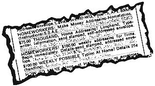
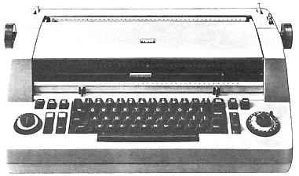
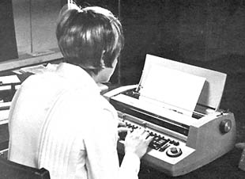
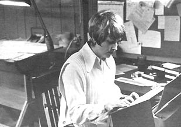
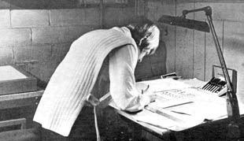

One of the All-Time Great elusive dreams of American man and womankind-ranking right up there with The Fountain of Youth and World Peace-is A Little Business At Home. In the case of the gentler sex, this dream is often further refined into A Little Typing Business At Home . . . and many are the ads in the back pages of the confession magazines that promise to tell-for a fee-how to establish a Profitable Home Typing Operation.
All well and good ... except that those promises seldom materialize. Furthermore, the cost of the "course" involved often amounts to a fairly hefty little chunk of cash . . . especially for widows, divorcees with children and shut-ins. In other words, most of the home typing schemes are just that: schemes that make a fast buck for con-artists at the expense of those most desperate and least able to stand the gaff.
Well be of good cheer, gang. Because MOTHER is now going to tell you about a guaranteed, gen-u-wine home typing business that will not only work . . . but that can net you $10,000 a year or more right from the start . . . on a part-time basis.
As might be expected, the typing we're talking about is not the ordinary garden variety. It's a specialized form of the art called typesetting and-before you panic-let me add that the tools of the trade which you'll be using are actually easier and cleaner to operate than most office electric or home portable typewriters.
What's more, the primary machine and all supporting equipment and supplies you'll need to run your home typesetting business for a full year-together in one lump-are small enough to fit on a single desk or table top. As a final frosting on the cake-unlike the rip-off home business "courses"-you can actually try this one out for a month or more before you personally lay out one nickle . . . AND, if you do decide to establish a typesetting operation, you can then either lease or purchase everything you'll need in any one of several very easy ways.
Sounds too good to be true, doesn't it? There's got to be a catch somewhere . . . maybe the business is just too tough for the average person to break into . . . or something.
Well, it may sound too good to be true, but it is true and you can start cycling some of the multi-billion dollar printing industry through your basement study or kitchen nook right now. I know one housewife in Cleveland-Myra Schneider-who has already established her home typesetting operation and she says that busting into the field is no trick at all. Matter of fact, she claims she sort of wandered in by accident.
Myra's old high school it seems, had a reunion about two and a half years back and her committee was given the job of putting together and printing a typeset program for the digs. Myra was put in charge of the project and she quickly learned that (1) typesetting is very expensive and (2) she could do the job herself for much less money on a rented IBM Composer.
As it turned out, the typesetting for the booklet didn't cost the high school anything at all because Myra became so intrigued with the possibilities offered by the Composer that she arranged to have one set into her home on a free demonstration. That demonstration was evidently quite successful because, with only the salesman's instructions, Myra was able to set all the type for the reunion program . . . and launch herself into a part-time business that has netted close to $1,000 a month right from the start.
Myra says, "The very next week after I composed the high school program, the printer who had worked on the booklet got a call from the man in charge of a local corporation's print shop. That man asked our printer if he knew anyone who could do a typesetting job in a hurry and the printer recommended me. That was kind of scary because-except for the reunion booklet-I'd never done the work in my life. But when I heard the job was paying $900.00, I figured I'd give it a go. The work turned out well and that one job paid several months rent on the machine and bought me a desk and light table. The man I had done the typesetting for told another printer about me and, before I knew it, I was rolling. I decided to keep the Composer."
With each new job, word of mouth advertising for Myra's work traveled to still other potential buyers and her new business continued to grow rapidly. It's hard to say just how much you can bank on that kind of assistance but Myra sees no problem in starting or promoting a home composing operation.
"Look at it this way," she says. "Say you order a machine. The average delivery time is three to four weeks. You'll probably be allowed to keep a demonstrator until your unit arrives and, if you have second thoughts, you can always cancel your order right up until the Composer is delivered. So you've got a grace period in which you can typeset samples and circulate them to your potential market. If you line up just one customer who will send you $150 worth of work a month, you've covered your overhead.
"And I'll tell you . . . if you can't make $150 a month setting type . . . well, you shouldn't be doing it. Look at the local printers around you. Most of the smaller ones-especially all the new "quick print" shops have no typesetting facilities and no real desire to handle that kind of work. On the other hand, their lack of com posing equipment is costing them customers every day that they'd like to hold. If you can give these printers the profitable alternative of offering their customers professionally composed copy for a price nearly as low as typewritten pages, they're almost sure to accept. Real ly, you have to make a minimum of three to four hundred dollars a month with your Composer unless you completely botch every job you touch.
" Well, of course, some people-those who don't type- would botch every job. But, as Myra says, "If you can type at all, you can use a Composer. I was an absolutely miserable typist when I began but I still brought in the work. If you already handle a typewriter with some speed and accuracy, you'll find the Composer a breeze to use. And if you don't type at all . . . well, you can learn on the Composer.
" By the way, Myra speaks from experience when she quotes that $300-a-month minimum figure because that was the lowest income she ever earned with her machine way back in the beginning when she charged only $5.00 an hour for her time. "I was such a poor typist," Myra says, "that I didn't feel right asking for more. Now that my composing speed is up to a more acceptable level, though, I ask-and get-$12.00 an hour. That may sound high but my customers consider it a bargain when they find my finished jobs cost only about 20-30% of what a downtown shop gets for the same work.
" It's not hard to understand-at a quoted $12.00 an hour-how Myra Schneider grosses an average $1,000 per month with her home typesetting business. Actually, she could earn much more if she tried but she prefers to hold her "job" down to four hours a night (eight p.m. to midnight), five nights a week. "I have three preschool children," says Myra, "and I like to be with them during the day. This way, I can be a full-time mother and still earn all the money-roughly $250 a week-that I want.
" Myra hastenes to add that, although she likes to keep her income at a constant thousand dollars per month, it doesn't always work that way. Some months her billings shoot up to $2,000 and they drop lower in others. But with almost no promotional efforts at all (in two and a half years of composing, she has spent only two days looking for work), Myra's gross income seems to average an easy $12,000 a year.
vIf you happen to be a person who likes to hustle or you want to put in more time than Myra, there's no reason to believe that you can't do several times that volume of business. A friend of hers, for instance, started with one machine a little over a year ago. He went out selling and now has seven people setting copy on as many Composers. The work is there if you want it.
But let's say you'd prefer a setup more like Myra's. How do you-as a housewife, retiree or shut-in-obtain a Composer? Well, coaxing a machine out of IBM is surprisingly simple.
Call the nearest IBM office and ask for an "office machines" salesman. Tell him you want to start a home typesetting service for printers and that you want a demonstration of the IBM Composer. Within a day or-at most-two, that fellow should be knocking on your front door with a demo Composer under his arm. He'll give you enough instructions to turn you loose on the machine . . . and then he'll simply disappear for at least a week! There's no high pressure and no arm twisting. Just you and the Composer and a chance to see what it can do. If you're smart, you'll practice for a couple days and then dash off some samples to show your local printers.
If you then decide to give the business a try . . . but you still aren't sure that you want to commit yourself to buying a Composer, you'll find that IBM makes it very easy for you to obtain a brand new machine on a trial rental basis. In fact, if you have a well-established credit rating, you won't even be required to put down a deposit. The demonstrator will be left with you, your Composer will be ordered and you'll pay nothing until the new machine arrives in approximately one month. Then, and only then, you'll be charged a monthly rental and maintenance fee of $150 for a minimum of six months.
If you have no credit rating, the terms are a little stiffer: you'll be required to put up $450 front money to cover the last three months rental on your contract. That's still more than fair on IBM's part when you consider that a Composer sells for a base price of $4,400! Once you keep the machine six months, by the way, that deposit is completely refunded so-even if you go into the deal with no credit rating and have to put up the front money-you won't lose a thing if you're honest. IBM is taking all the risk.
If that's not bending over backwards to give you a good deal, the company will sweeten the pot even more at the end of one year's rental. By that time you'll have paid a total of $1800 rent and IBM will cheerfully apply exactly half of this-$900-toward the purchase of your Composer if you'd like to buy the machine. The $900 will be considered a down payment and-get this-your monthly payments will then drop from $150 to only $120. Again, full maintenance is included in the contract.
Now, in effect, what this means is that IBM will virtually finance your new business with very few questions asked . . . and that's a good deal any way you look at it.
Once you get your Composer (or even the loaner) you've got nine-tenths of what you need to set up shop. The only other major piece of "professional" equipment you'll have to have is a light table and you can make that: it's just a frame that holds a piece of frosted glass over a light. Trying to save a few bucks by cobbling a light board together is hardly worth the effort, however, because you can you can buy a really good a a really good, small ANCO board just like the one Myra has-for only $40.00 from any well-stocked art supply store. It will give you outstanding service from now on and is well worth the money.
In case you're wondering, you'll use the light board for cutting in corrections. The typed copy you send to
a printer must be ready to be photographed and smudges nor mistakes will be accepted. Since it's impossible to erase an error on camera-ready copy, it standard practice to type a correction on a separate piece of paper and then cut or paste the correction exactly in the place of the rejected error: This is almost impossible without a light board . . . and ridiculously lously easy with one.
Other than a few miscellaneous straight edges, an Exacto knife, a roll of white layout tape and some thirty-nine cent black-ink ball point pens (for ruling business forms), you're in business. You can get all the small items from any well-stocked art supply store.
A special desk and chair would be nice but Myra found that a kitchen chair and card table worked quite well for her until her first check came in.
That covers your equipment. The only supplies you'll need are Composer ribbons and paper. There's no way to skimp on them and, all told, the cost of paper and ribbons will run approximately $58 for every $4,000-$5,000 you bill. You'll hardly. feel, it in other words.
There is one other small selection of equipment you'll buy from time to time that I haven't mentioned . . . because your customers will do the buying for you! You'll soon learn that-no matter how many type balls, or fonts, you have-someone always wants another. When Myra runs into the problem she just pulls out the IBM catalog and lets the customer pick the type face he does prefer. Then, if he OKs the purchase, Myra tacks $30 on his bill and orders the font especially for that job. Once the work is completed, the type ball is hers to keep and she now has 100 fonts that were purchased this way. That's $3,000 worth of equipment that Myra's customers were happy to buy her!
Another bit of free percentage you should know about is the free school that IBM runs for folks like you. The company will give you and any number of people you want to break in on the Composer sixteen hours each of training at no charge. That's right. Any time you want to bring a new partner or employee into the business, IBM will give them the sixteen hour course at absolutely no charge.
In addition to good money and good hours, Myra finds that her home business offers a continuing opportunity for expansion into other satisfying areas. An increasing number of folks who come to her for typesetting request that she handle the coordination of any layout, printing, binding and other graphic arts procedures too. Myra contracts out most of this work, of course, but she does enjoy the occasional layout assignment. "I'm not a very creative person," she says, "but this work allows me to be a little original. Using a bit from one design in my reference file and something else from another page I've clipped, I'm able to add enough of myself to make a layout that is unique and that satisfies the customer."
Yep. Typesetting at home can be a darn good business . . . but to be realistic, it has some drawbacks too. The worst of these-if you let it shake you-will be pressure. Printers and their customers are notorious for wanting jobs done yesterday. If you accept a rush-rush assignment you'll probably be forced to politely but firmly insist that you be left completely alone while you do it.
You'll also find that your work will tend to come in spurts. Some seasons will leave you with time on your hands . . . then, suddenly! Everyone will want a Christmas catalog, spring clearance or back-to-school sales brochure composed and printed at the same time. You'll learn to ride that roller coaster soon enough but the real problem will be the regular customer who contacts you with a hurry-up job . . . when you're already loaded to the gills. If you turn him away he may not be back and if you take the assignment it will mean working all night. That can be a tough decision.
Perhaps the worst drawback to home typesetting is the fact that it just won't work well at all "back of beyond" in that wilderness cabin you may have in mind. There is composing-and a lot of it-done by mail . . . but there's a whale of a lot more done as the result of personal contact. The nearer to an urban center you locate, in other words, the better your business will be. The ideal compromise might be setting up on an organic homestead within an hour's drive of any medium or large city in the country. You'll have access to a ready market that way . . . but most of your living will be done in the relatively tall and uncut.
Then again, you may actually prefer to live in town. Some folks do, you know. In that case just like Myra-you'll almost certainly have it made. Myra Schneider is quite happy knocking down $12,000 a year right in the basement "office" of her suburban home. She's completely free of the downtown hassle, she works the hours she chooses, her business has helped pay for and remodel the house in which the Schneiders live . . . and Myra's done it all without once sacrificing the pleasures of parenthood.
If that sounds good to you, call IBM and check out the opportunity for yourself. You know the ground rules now and you should be able to talk intelligently enough to an office equipment salesman to make sense. Remember that he's already in the business-so to speak-and he should know exactly which printers need outside composing help. Don't be afraid to ask for such leads . . . and double check them before you commit yourself to purchasing a Composer. By the time you sign the contract for your machine, your business should already be well launched. That is, if you have Myra's success . . . and there's no reason to believe that you won't.
In researching this article I asked a few printers around Cleveland if they felt Myra's luck had been exceptional. They seemed to think not. According to them, anyone offering a composing service-and making it known-is in for a share of the work. Printers are a closely-knit group and they like the home industry prices you'll be able to offer. If you can deliver quality work (the Composer makes that easy)-and do it on time-the word will quickly get around and you should soon have more jobs looking for you than you can handle.
No doubt about it: you can make that dream of a Little Typing Business At Home come true.
THE HANSEN COMPOSING SERVICE
1401 Riverside Avenue
Kansas City, Kansas 66119
ANNOUNCING THE HANSEN COMPOSING SERVICE!
We'd like you to know that Kansas City now has a new, low-cost typesetting service that is eager to please.
The Hansen Composing Service is right here in town and just a phone call away. And, since SERVICE is our last name, we're ready to work all night to help you meet those tight deadlines you get from time to time.
Samples of our work and the type fonts we have in stock are enclosed. Please look 'em over and give us a chance to quote on your next job. You'll be glad you did.
Sincerely,
|
 JANICE HANSEN |
 |
 |
|
 |
 |
|